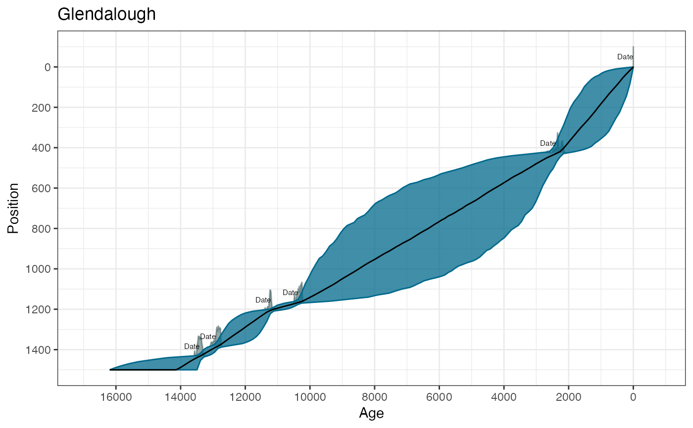

R/Bchronology.R
Bchronology.RdFits a non-parametric chronology model to age/position data according to the Compound Poisson-Gamma model defined by Haslett and Parnell (2008) <DOI:10.1111/j.1467-9876.2008.00623.x>. This version uses a slightly modified Markov chain Monte Carlo fitting algorithm which aims to converge quicker and requires fewer iterations. It also a slightly modified procedure for identifying outliers
Bchronology( ages, ageSds, positions, positionThicknesses = rep(0, length(ages)), calCurves = rep("intcal13", length(ages)), ids = NULL, outlierProbs = rep(0.01, length(ages)), predictPositions = seq(min(positions), max(positions), length = 100), pathToCalCurves = system.file("data", package = "Bchron"), jitterPositions = FALSE, iterations = 10000, burn = 2000, thin = 8, extractDate = 1950 - as.numeric(format(Sys.time(), "%Y")), maxExtrap = 1000, thetaMhSd = 0.5, muMhSd = 0.1, psiMhSd = 0.1, ageScaleVal = 1000, positionNormalise = TRUE )
| ages | A vector of ages (most likely 14C) |
|---|---|
| ageSds | A vector of 1-sigma values for the ages given above |
| positions | Position values (e.g. depths) for each age |
| positionThicknesses | Thickness values for each of the positions. The thickness value should be the full thickness value of the slice. By default set to zero. |
| calCurves | A vector of values containing either 'intcal13', 'shcal13', 'marine13', or 'normal'. Should be the same length the number of ages supplied. Non-standard calibration curves can be used provided they are supplied in the same format as those previously mentioned and are placed in the same directory, or created via |
| ids | ID names for each age |
| outlierProbs | A vector of prior outlier probabilities, one for each age. Defaults to 0.01 |
| predictPositions | A vector of positions (e.g. depths) at which predicted age values are required. Defaults to a sequence of length 100 from the top position to the bottom position |
| pathToCalCurves | File path to where the calibration curves are located. Defaults to the system directory where the 3 standard calibration curves are stored. |
| jitterPositions | Whether to jigger the positions at startup or not. Default is FALSE but if there are lots of dates at similar depths this may resolve some initialisation problems |
| iterations | The number of iterations to run the procedure for |
| burn | The number of starting iterations to discard |
| thin | The step size for every iteration to keep beyond the burnin |
| extractDate | The top age of the core. Used for extrapolation purposes so that no extrapolated ages go beyond the top age of the core. Defaults to the current year |
| maxExtrap | The maximum number of extrapolations to perform before giving up and setting the predicted ages to NA. Useful for when large amounts of extrapolation are required, i.e. some of the predictPositions are a long way from the dated positions |
| thetaMhSd | The Metropolis-Hastings standard deviation for the age parameters |
| muMhSd | The Metropolis-Hastings standard deviation for the Compound Poisson-Gamma mean |
| psiMhSd | The Metropolis-Hastings standard deviation for the Compound Poisson-Gamma scale |
| ageScaleVal | A scale value for the ages. |
| positionNormalise | Whether to normalise the position values. |
A list of class BchronologyRun which include elements:
The posterior estimated values of the ages
The posterior estimated outlier values (1=outlier, 2=not outlier). The means of this parameter give the posterior estimated outlier probabilities
The posterior values of the Compound Poisson-Gamma mean
The posterior values of the Compound Poisson-Gamma scale
The posterior estimated ages for each of the values in predictPosition
The positions at which estimated ages were required
The calibrated ages as output from BchronCalibrate
All of the input values to the Bchronology run
The Bchronology function fits a compound Poisson-Gamma distribution to the increments between the dated levels. This involves a stochastic linear interpolation step where the age gaps are Gamma distributed, and the position gaps are Exponential. Radiocarbon and non-radiocarbon dates (including outliers) are updated within the function also by MCMC.
Haslett, J., and Parnell, A. C. (2008). A simple monotone process with application to radiocarbon-dated depth chronologies. Journal of the Royal Statistical Society, Series C, 57, 399-418. DOI:10.1111/j.1467-9876.2008.00623.x Parnell, A. C., Haslett, J., Allen, J. R. M., Buck, C. E., and Huntley, B. (2008). A flexible approach to assessing synchroneity of past events using Bayesian reconstructions of sedimentation history. Quaternary Science Reviews, 27(19-20), 1872-1885. DOI:10.1016/j.quascirev.2008.07.009
# \donttest{ # Data from Glendalough data(Glendalough) # Run in Bchronology - all but first age uses intcal13 GlenOut = Bchronology(ages=Glendalough$ages,ageSds=Glendalough$ageSds, calCurves=Glendalough$calCurves,positions=Glendalough$position, positionThicknesses=Glendalough$thickness,ids=Glendalough$id, predictPositions=seq(0,1500,by=10))#> | | | 0% | | | 1% | |= | 1% | |= | 2% | |== | 3% | |== | 4% | |=== | 4% | |=== | 5% | |=== | 6% | |==== | 6% | |==== | 7% | |===== | 8% | |===== | 9% | |====== | 9% | |====== | 10% | |====== | 11% | |======= | 11% | |======= | 12% | |======== | 13% | |======== | 14% | |========= | 14% | |========= | 15% | |========= | 16% | |========== | 16% | |========== | 17% | |=========== | 18% | |=========== | 19% | |============ | 19% | |============ | 20% | |============ | 21% | |============= | 21% | |============= | 22% | |============== | 23% | |============== | 24% | |=============== | 24% | |=============== | 25% | |=============== | 26% | |================ | 26% | |================ | 27% | |================= | 28% | |================= | 29% | |================== | 29% | |================== | 30% | |================== | 31% | |=================== | 31% | |=================== | 32% | |==================== | 33% | |==================== | 34% | |===================== | 34% | |===================== | 35% | |===================== | 36% | |====================== | 36% | |====================== | 37% | |======================= | 38% | |======================= | 39% | |======================== | 39% | |======================== | 40% | |======================== | 41% | |========================= | 41% | |========================= | 42% | |========================== | 43% | |========================== | 44% | |=========================== | 44% | |=========================== | 45% | |=========================== | 46% | |============================ | 46% | |============================ | 47% | |============================= | 48% | |============================= | 49% | |============================== | 49% | |============================== | 50% | |============================== | 51% | |=============================== | 51% | |=============================== | 52% | |================================ | 53% | |================================ | 54% | |================================= | 54% | |================================= | 55% | |================================= | 56% | |================================== | 56% | |================================== | 57% | |=================================== | 58% | |=================================== | 59% | |==================================== | 59% | |==================================== | 60% | |==================================== | 61% | |===================================== | 61% | |===================================== | 62% | |====================================== | 63% | |====================================== | 64% | |======================================= | 64% | |======================================= | 65% | |======================================= | 66% | |======================================== | 66% | |======================================== | 67% | |========================================= | 68% | |========================================= | 69% | |========================================== | 69% | |========================================== | 70% | |========================================== | 71% | |=========================================== | 71% | |=========================================== | 72% | |============================================ | 73% | |============================================ | 74% | |============================================= | 74% | |============================================= | 75% | |============================================= | 76% | |============================================== | 76% | |============================================== | 77% | |=============================================== | 78% | |=============================================== | 79% | |================================================ | 79% | |================================================ | 80% | |================================================ | 81% | |================================================= | 81% | |================================================= | 82% | |================================================== | 83% | |================================================== | 84% | |=================================================== | 84% | |=================================================== | 85% | |=================================================== | 86% | |==================================================== | 86% | |==================================================== | 87% | |===================================================== | 88% | |===================================================== | 89% | |====================================================== | 89% | |====================================================== | 90% | |====================================================== | 91% | |======================================================= | 91% | |======================================================= | 92% | |======================================================== | 93% | |======================================================== | 94% | |========================================================= | 94% | |========================================================= | 95% | |========================================================= | 96% | |========================================================== | 96% | |========================================================== | 97% | |=========================================================== | 98% | |=========================================================== | 99% | |============================================================| 99% | |============================================================| 100%# Summarise it a few different ways summary(GlenOut) # Default is for quantiles of ages at predictPosition values#> Quantiles of predicted ages by depth: #> Depth 2.5% 25% 50% 75% 97.5% #> 0 -2.000 -1.00 -1.0 1.00 1.000 #> 10 10.975 33.75 59.0 132.00 513.175 #> 20 21.000 66.00 117.0 245.00 792.075 #> 30 31.975 100.00 173.0 331.00 914.075 #> 40 42.975 136.75 230.0 410.00 1041.200 #> 50 53.950 173.75 288.0 488.25 1168.525 #> 60 66.000 211.00 346.0 565.25 1256.125 #> 70 82.950 246.75 400.0 639.00 1323.850 #> 80 97.950 286.50 450.0 699.50 1408.050 #> 90 115.900 334.75 502.0 754.00 1465.100 #> 100 128.975 371.00 557.5 819.25 1502.025 #> 110 144.925 412.00 614.0 886.00 1554.775 #> 120 160.975 453.50 664.0 955.00 1613.000 #> 130 174.975 496.00 719.0 1004.50 1663.200 #> 140 199.950 543.75 769.0 1068.25 1700.025 #> 150 218.000 586.00 820.5 1141.00 1725.325 #> 160 233.000 632.00 871.0 1194.25 1774.250 #> 170 258.950 679.75 921.0 1249.25 1809.025 #> 180 273.950 730.50 981.5 1290.00 1837.150 #> 190 292.975 776.00 1034.0 1340.50 1872.150 #> 200 310.950 829.00 1088.0 1403.25 1931.050 #> 210 333.900 861.75 1139.5 1447.75 1952.125 #> 220 357.975 909.75 1199.5 1483.25 1999.000 #> 230 401.950 951.75 1244.5 1524.75 2055.225 #> 240 451.875 989.50 1301.0 1575.25 2068.025 #> 250 479.975 1050.50 1351.5 1632.50 2087.425 #> 260 500.925 1104.75 1402.5 1678.75 2119.025 #> 270 536.850 1152.50 1452.0 1717.25 2151.050 #> 280 601.300 1206.00 1506.5 1762.75 2171.000 #> 290 634.725 1261.00 1560.0 1813.00 2185.050 #> 300 691.800 1316.75 1611.0 1851.50 2202.025 #> 310 738.625 1385.50 1661.0 1895.00 2225.075 #> 320 785.925 1441.75 1722.5 1932.25 2259.050 #> 330 831.650 1498.00 1768.5 1970.00 2279.025 #> 340 866.800 1566.50 1825.0 2010.25 2313.100 #> 350 946.475 1634.75 1883.5 2054.00 2343.075 #> 360 1049.825 1691.00 1942.0 2089.00 2375.100 #> 370 1129.850 1765.00 1991.0 2125.25 2393.075 #> 380 1233.800 1837.50 2045.0 2165.00 2420.025 #> 390 1303.375 1921.25 2096.0 2201.00 2457.150 #> 400 1389.925 1999.50 2145.0 2247.00 2511.025 #> 410 1565.250 2095.00 2193.0 2288.25 2559.000 #> 420 1848.650 2170.00 2268.0 2333.00 2608.025 #> 430 2190.975 2320.00 2399.0 2508.00 2979.925 #> 440 2232.000 2403.00 2543.5 2749.25 3691.150 #> 450 2269.900 2477.00 2663.0 2924.00 4155.900 #> 460 2300.000 2542.00 2781.0 3112.75 4513.375 #> 470 2336.900 2609.00 2891.5 3300.25 4778.250 #> 480 2367.000 2681.75 2985.0 3477.25 4995.250 #> 490 2389.875 2742.50 3089.0 3622.50 5255.275 #> 500 2409.975 2817.75 3195.0 3753.00 5414.025 #> 510 2435.900 2902.00 3310.0 3884.50 5573.050 #> 520 2460.875 2983.25 3418.5 4005.00 5763.375 #> 530 2485.950 3064.75 3519.0 4124.25 5982.750 #> 540 2515.950 3124.00 3630.0 4299.25 6155.275 #> 550 2545.975 3202.50 3765.0 4421.00 6284.250 #> 560 2575.975 3298.75 3864.0 4575.25 6391.775 #> 570 2607.975 3411.50 3978.5 4680.00 6505.125 #> 580 2654.700 3492.25 4066.0 4822.25 6657.200 #> 590 2689.925 3562.75 4180.0 4937.25 6766.100 #> 600 2719.800 3670.25 4303.0 5051.50 6896.250 #> 610 2746.775 3762.75 4416.5 5183.50 7032.150 #> 620 2770.975 3862.00 4530.0 5279.75 7161.225 #> 630 2796.975 3946.25 4630.5 5411.50 7235.400 #> 640 2832.800 4035.75 4728.0 5508.50 7417.025 #> 650 2872.800 4132.50 4835.5 5630.75 7504.300 #> 660 2918.975 4225.75 4920.0 5716.25 7566.625 #> 670 2968.650 4308.75 5027.5 5824.50 7710.425 #> 680 3012.525 4406.25 5129.0 5906.25 7815.075 #> 690 3043.925 4530.50 5255.5 6019.25 7876.325 #> 700 3070.975 4615.25 5374.0 6142.75 7984.075 #> 710 3118.700 4694.00 5471.0 6267.25 8053.800 #> 720 3175.200 4774.25 5589.5 6392.25 8150.475 #> 730 3208.900 4866.50 5699.0 6507.00 8260.175 #> 740 3231.925 4945.50 5806.5 6597.00 8352.450 #> 750 3337.925 5033.75 5893.5 6689.00 8483.850 #> 760 3404.950 5162.00 5984.0 6829.25 8612.375 #> 770 3536.850 5248.50 6093.0 6923.75 8703.725 #> 780 3604.175 5351.25 6191.0 7005.25 8780.025 #> 790 3645.900 5427.25 6305.0 7100.00 8856.000 #> 800 3740.650 5530.75 6399.5 7201.00 8913.450 #> 810 3828.750 5665.00 6515.5 7312.25 8961.075 #> 820 3867.900 5756.50 6632.5 7400.50 9008.350 #> 830 3975.200 5854.25 6726.0 7473.00 9057.050 #> 840 4081.975 5964.25 6849.5 7565.25 9099.075 #> 850 4167.825 6080.50 6937.5 7669.50 9150.275 #> 860 4204.800 6173.00 7036.0 7782.50 9197.000 #> 870 4242.550 6275.25 7142.0 7871.25 9275.100 #> 880 4279.125 6336.50 7248.0 8009.75 9322.400 #> 890 4350.175 6417.25 7345.5 8104.25 9434.950 #> 900 4524.100 6561.50 7455.0 8198.00 9522.575 #> 910 4593.750 6686.00 7549.0 8283.25 9570.350 #> 920 4650.750 6768.50 7636.0 8375.00 9619.100 #> 930 4773.250 6896.50 7731.0 8477.50 9644.450 #> 940 4865.700 7013.00 7849.0 8578.25 9708.250 #> 950 4981.650 7137.75 7953.0 8665.75 9745.200 #> 960 5085.225 7228.00 8058.0 8771.00 9773.150 #> 970 5203.375 7365.75 8160.5 8839.25 9827.450 #> 980 5330.825 7491.75 8251.5 8912.00 9870.025 #> 990 5488.800 7624.25 8361.0 8978.00 9892.175 #> 1000 5561.400 7759.75 8455.0 9065.00 9923.175 #> 1010 5582.875 7878.00 8564.0 9156.00 9956.050 #> 1020 5738.125 7985.75 8642.5 9243.00 9981.100 #> 1030 5886.500 8106.50 8744.5 9332.00 10005.125 #> 1040 6030.900 8199.50 8850.5 9416.25 10053.050 #> 1050 6246.575 8296.50 8960.5 9496.25 10080.025 #> 1060 6476.775 8428.25 9066.0 9567.25 10106.000 #> 1070 6802.850 8573.75 9182.5 9651.25 10130.025 #> 1080 7003.675 8681.75 9290.0 9727.00 10162.025 #> 1090 7176.925 8790.50 9391.0 9802.00 10190.100 #> 1100 7339.400 8935.75 9494.5 9871.25 10213.025 #> 1110 7588.400 9065.50 9605.5 9941.00 10238.025 #> 1120 7879.175 9236.25 9738.5 10009.25 10260.175 #> 1130 8094.200 9420.75 9851.5 10073.25 10294.050 #> 1140 8401.450 9608.75 9980.5 10144.25 10324.000 #> 1150 8856.650 9836.75 10099.5 10211.25 10361.075 #> 1160 9348.500 10112.75 10219.0 10285.00 10416.050 #> 1170 10304.950 10372.00 10420.0 10480.00 10796.025 #> 1180 10434.975 10605.00 10654.0 10713.50 11004.025 #> 1190 10552.975 10842.75 10892.0 10942.25 11114.050 #> 1200 10765.000 11082.75 11127.0 11165.00 11259.025 #> 1210 11172.875 11248.00 11290.0 11364.25 11757.175 #> 1220 11212.950 11310.75 11378.0 11506.25 12073.300 #> 1230 11239.000 11373.00 11465.5 11639.00 12221.075 #> 1240 11269.975 11431.00 11549.0 11751.25 12294.375 #> 1250 11296.975 11494.00 11636.5 11846.50 12364.250 #> 1260 11324.000 11559.75 11721.0 11938.25 12421.050 #> 1270 11348.975 11626.75 11808.0 12017.25 12478.025 #> 1280 11385.950 11693.75 11899.0 12095.00 12538.025 #> 1290 11414.975 11771.50 11981.0 12180.25 12572.000 #> 1300 11441.000 11857.50 12066.0 12258.75 12614.100 #> 1310 11490.575 11945.75 12151.0 12336.00 12636.100 #> 1320 11519.000 12031.75 12234.5 12416.25 12666.050 #> 1330 11593.925 12117.75 12322.0 12485.25 12715.025 #> 1340 11621.975 12232.75 12411.5 12547.50 12748.100 #> 1350 11717.925 12334.75 12495.5 12607.25 12788.075 #> 1360 11788.000 12449.50 12580.0 12667.25 12830.075 #> 1370 12017.950 12575.50 12662.0 12727.25 12879.025 #> 1380 12335.775 12705.00 12745.5 12808.25 12948.075 #> 1390 12785.950 12839.00 12883.0 12954.00 13124.175 #> 1400 12837.000 12957.75 13002.0 13068.25 13242.125 #> 1410 12901.950 13075.00 13123.0 13179.00 13312.200 #> 1420 12970.900 13187.00 13241.0 13286.00 13373.025 #> 1430 13150.975 13304.00 13353.0 13396.00 13472.100 #> 1440 13317.950 13420.00 13487.0 13601.00 14347.025 #> 1450 13353.975 13479.25 13589.5 13807.50 14808.425 #> 1460 13378.000 13531.00 13694.0 14014.25 15207.300 #> 1470 13407.975 13575.50 13798.0 14164.25 15477.125 #> 1480 13435.875 13630.00 13897.5 14292.75 15799.150 #> 1490 13453.000 13679.75 13999.5 14428.25 16026.600 #> 1500 13472.975 13732.50 14095.0 14562.50 16351.000#> Convergence check (watch for too many small p-values): #> p-value #> RateMean 0.00139 #> Outlier 5 0.00691 #> Beta-100900 0.01675 #> RateVar 0.03840 #> Outlier 4 0.07844 #> Top-1 0.08855 #> Outlier 1 0.13302 #> Beta-100897 0.14076 #> Beta-100899 0.25968 #> Outlier 3 0.30647 #> Beta-100901 0.35166 #> Beta-122061 0.35729 #> Outlier 2 0.35838 #> Outlier 6 0.42882#> Posterior outlier probability by date: #> Date OutlierProb #> Top-1 0.010 #> Beta-122061 0.008 #> Beta-100901 0.008 #> Beta-100900 0.006 #> Beta-100899 0.012 #> Beta-100897 0.015# Predict for some new positions predictAges = predict(GlenOut, newPositions = c(150,725,1500), newPositionThicknesses=c(5,0,20))#> | | | 0% | | | 1% | |= | 1% | |= | 2% | |== | 3% | |== | 4% | |=== | 4% | |=== | 5% | |=== | 6% | |==== | 6% | |==== | 7% | |===== | 8% | |===== | 9% | |====== | 9% | |====== | 10% | |====== | 11% | |======= | 11% | |======= | 12% | |======== | 13% | |======== | 14% | |========= | 14% | |========= | 15% | |========= | 16% | |========== | 16% | |========== | 17% | |=========== | 18% | |=========== | 19% | |============ | 19% | |============ | 20% | |============ | 21% | |============= | 21% | |============= | 22% | |============== | 23% | |============== | 24% | |=============== | 24% | |=============== | 25% | |=============== | 26% | |================ | 26% | |================ | 27% | |================= | 28% | |================= | 29% | |================== | 29% | |================== | 30% | |================== | 31% | |=================== | 31% | |=================== | 32% | |==================== | 33% | |==================== | 34% | |===================== | 34% | |===================== | 35% | |===================== | 36% | |====================== | 36% | |====================== | 37% | |======================= | 38% | |======================= | 39% | |======================== | 39% | |======================== | 40% | |======================== | 41% | |========================= | 41% | |========================= | 42% | |========================== | 43% | |========================== | 44% | |=========================== | 44% | |=========================== | 45% | |=========================== | 46% | |============================ | 46% | |============================ | 47% | |============================= | 48% | |============================= | 49% | |============================== | 49% | |============================== | 50% | |============================== | 51% | |=============================== | 51% | |=============================== | 52% | |================================ | 53% | |================================ | 54% | |================================= | 54% | |================================= | 55% | |================================= | 56% | |================================== | 56% | |================================== | 57% | |=================================== | 58% | |=================================== | 59% | |==================================== | 59% | |==================================== | 60% | |==================================== | 61% | |===================================== | 61% | |===================================== | 62% | |====================================== | 63% | |====================================== | 64% | |======================================= | 64% | |======================================= | 65% | |======================================= | 66% | |======================================== | 66% | |======================================== | 67% | |========================================= | 68% | |========================================= | 69% | |========================================== | 69% | |========================================== | 70% | |========================================== | 71% | |=========================================== | 71% | |=========================================== | 72% | |============================================ | 73% | |============================================ | 74% | |============================================= | 74% | |============================================= | 75% | |============================================= | 76% | |============================================== | 76% | |============================================== | 77% | |=============================================== | 78% | |=============================================== | 79% | |================================================ | 79% | |================================================ | 80% | |================================================ | 81% | |================================================= | 81% | |================================================= | 82% | |================================================== | 83% | |================================================== | 84% | |=================================================== | 84% | |=================================================== | 85% | |=================================================== | 86% | |==================================================== | 86% | |==================================================== | 87% | |===================================================== | 88% | |===================================================== | 89% | |====================================================== | 89% | |====================================================== | 90% | |====================================================== | 91% | |======================================================= | 91% | |======================================================= | 92% | |======================================================== | 93% | |======================================================== | 94% | |========================================================= | 94% | |========================================================= | 95% | |========================================================= | 96% | |========================================================== | 96% | |========================================================== | 97% | |=========================================================== | 98% | |=========================================================== | 99% | |============================================================| 99% | |============================================================| 100%# Plot the output plot(GlenOut,main="Glendalough",xlab='Age (cal years BP)',ylab='Depth (cm)',las=1)# }